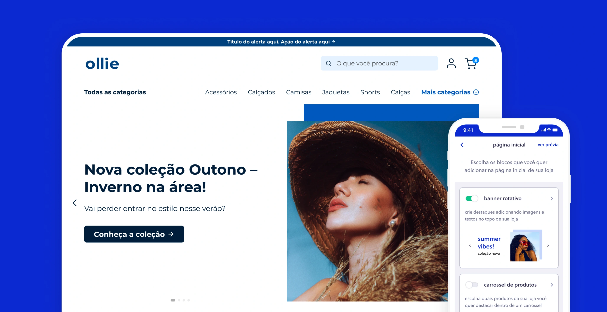
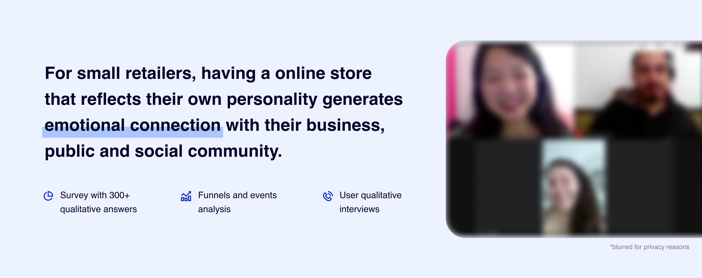
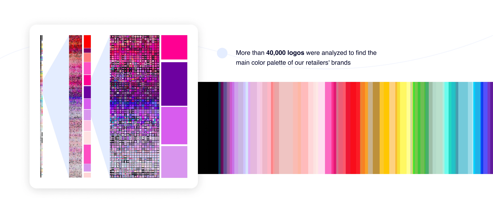
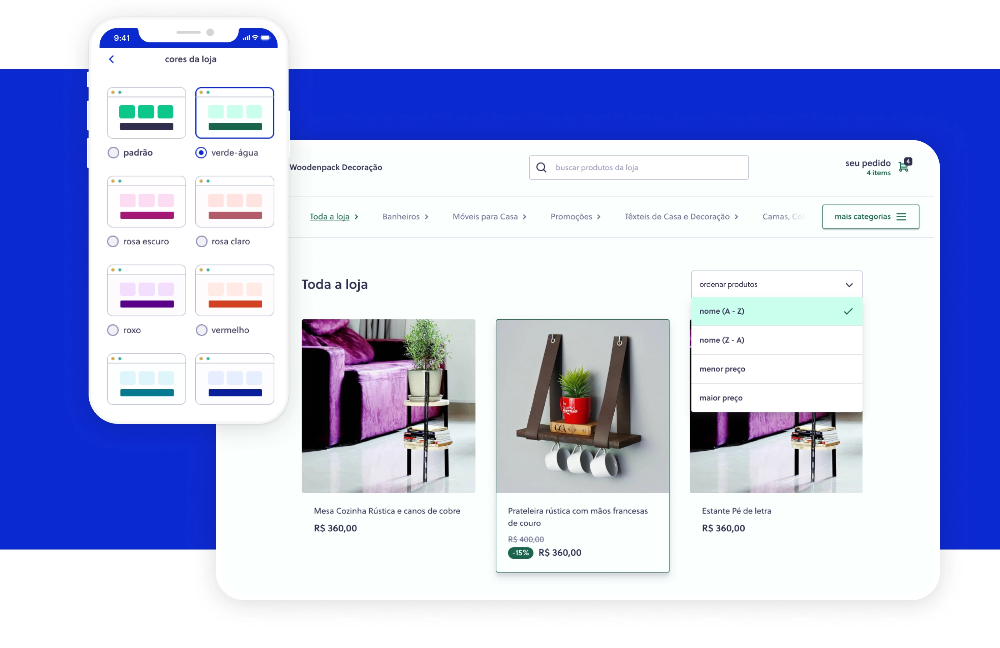
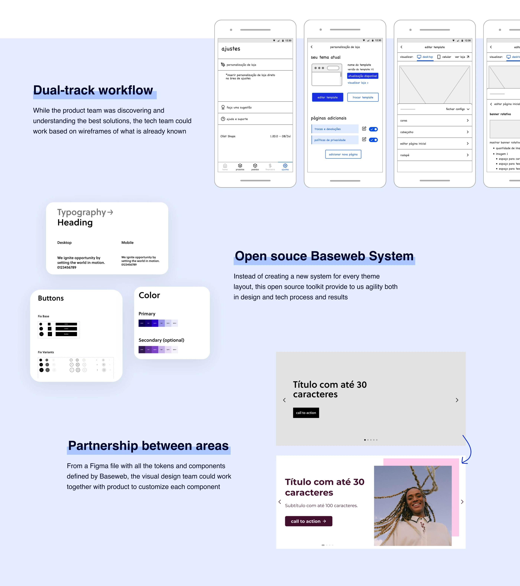
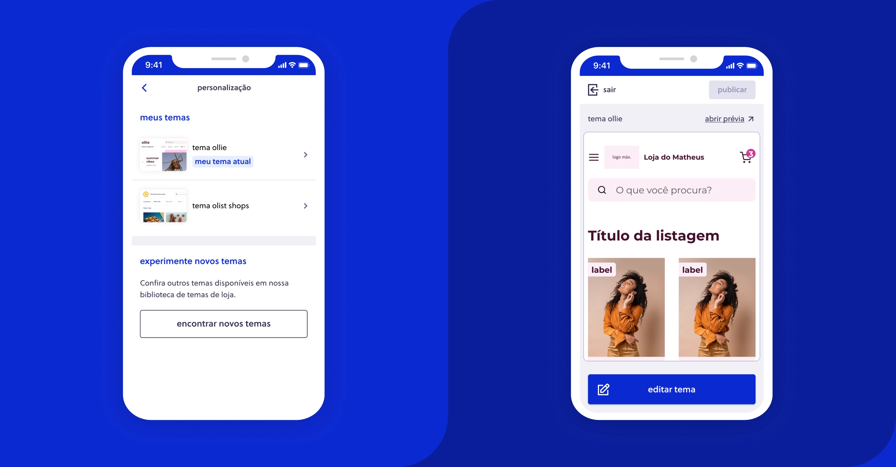
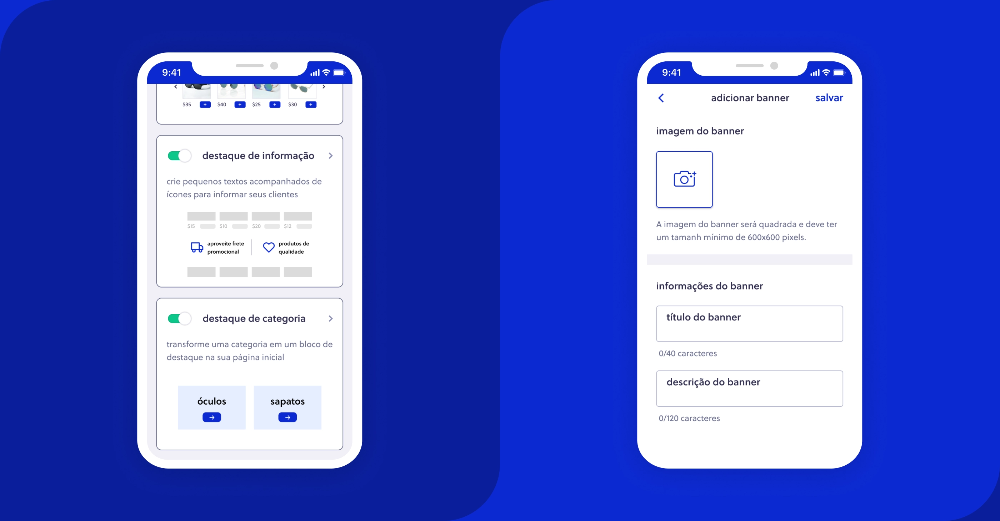
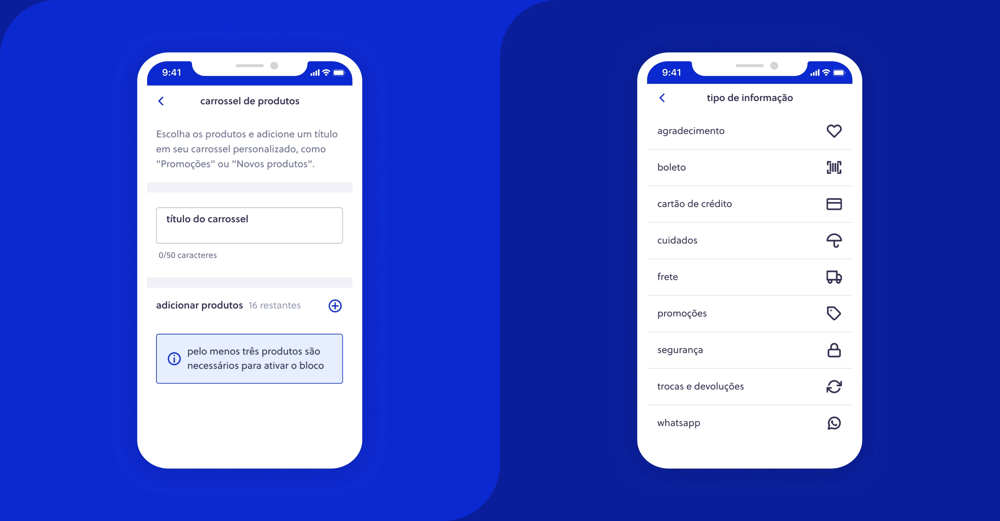
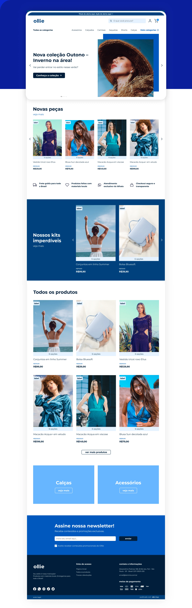

Olist Shops App
Development of a new customization feature for the Olist Shops application, an international online store builder focused on small shopkeepers. Research with previously existing data, application of agile methodologies, collaborative actions between teams and use of open source tools were crucial for a delivery in record time and with quality.
Timeframe: 2 months

Scenario and roles
Olist Shops was created in 2020 with the goal of being a mobile-first solution for retailers to build their catalogs and online stores. With the pandemic scenario, the application saw its use take off in the first months, generating +100 thousand online stores and being used in +160 countries.
As Product Designer, one of my challenges was to evolve the stores' interfaces from an extremely simple model to a more robust version, with more customization and layout options. All of this ensures an adequate usability for the website editing on mobile devices and for audiences with little knowledge in technology.
All this context took place in a new Squad, with no backlog of tasks and a large team of developers. In collaboration with my Product Manager, we were able to generate demand for the technical team from the beginning while we made our product discoveries for building the solutions.

Process and Deliverables
Because of the short time available for the execution of the task, at first we focused on discoveries from previously available data in our database, such as qualitative answers in our fixed suggestions forms, previous interviews with users, conversion funnels and data from application usage events.
This helped us define the first step of the project: the color change of the stores, which was previously non-customizable, and would now have a pre-selected color palette for the shopkeeper to choose from, thus maintaining the appropriate accessibility standards. For the choice of the main colors, we did a chromatic analysis of more than 40 thousand logos registered in our platform.


Once this first delivery was done, we moved on to a new step: allowing the store's layout to be modified in a more structural way, both by changing the store's theme and by adding new essential blocks (banners, carousels and other common e-commerce highlights).
For this delivery, we analyzed the main orders in our service channels, as well as the main e-commerce benchmarks in the market, looking for common patterns in this type of product.
Some factors were crucial for the success of the delivery in the time we had, such as the use of initial wireframes to speed up the technical team while decisions were being made (dual track workflow), the use of an open source design system to gain speed in the componentization and the partnership with olist's visual design team to customize the components of new themes.

Results and learnings
In a short time, the store customization features entered the top 3 features used in the application. With this sharp evolution, we were able to adapt our product to market standards and competition, innovating with a 100% mobile solution and solving the main issues of our users regarding their stores.
Besides the business results, our performance in this functionality led to several conversations and knowledge sharing with the community, both internally in the company and externally in the format of a lecture at the "2nd UX Design Seminar" (November, São Paulo - Brazil).
In this scenario of tight deadlines for big deliverables, one of the main attributes I learned is to use the data and information that already exists within your system and your community, thus allowing you to make some decisions and delve only into what matters for the project.
Another crucial factor was the power of collaboration: both between teams and in the open-source community. Bringing the technical team to the beginning of the project, creating tasks from doodles and wireframes, was crucial to speed up the delivery, as well as to involve correlated areas of the company and seek pre-structured solutions, avoiding rework and slowness for the final delivery of value.




Teams: Matheus Petroni (Product Designer), Tássia Pacheco (Product Manager), Halinne Lima (Web Designer), Piercarlo Melatti (Design Lead), Vinícius Campos (Tech Lead), João Belém, Gustavo Alves, Gustavo Inácio (Developers).